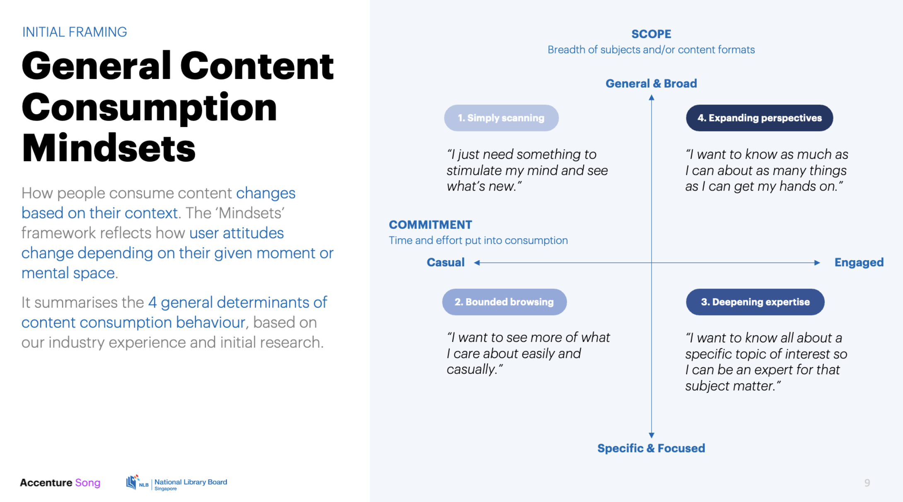
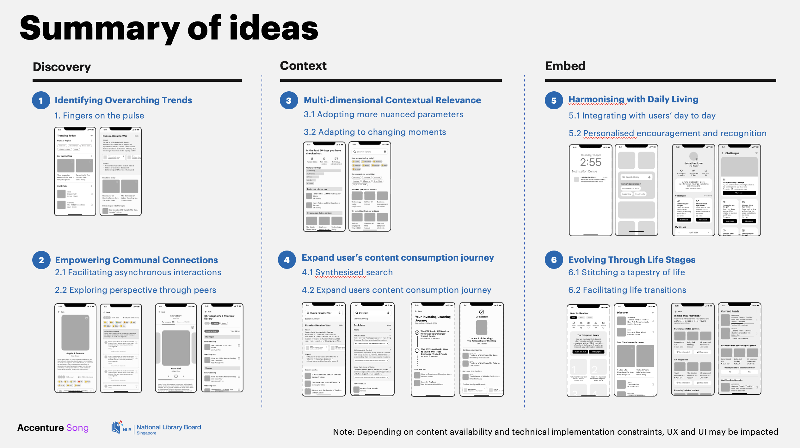

National Library Board (NLB)
My Role
xxx
Duration:
4 months
Responsibilities:
Idea Generation, UI/UX Design, User Research and Testing, High Fidelity Prototyping
The Project
An introduction of the client and our deliverablesHigh-level Summary
The National Library Board (NLB) is a statutory board under the
government of Singapore. The board manages the public libraries
throughout the country.
Accenture was hired as Design consultants to help NLB explore
novel methods of content discovery to encourage further engagement
with NLB's mobile app.
Our Deliverables
Together with other designers and technical consultants, we had the following responsibilities:
My Contributions and Tangible Outcomes
For this project, I was a key interaction designer that helped to spearhead the design process for the other designers. Some of my main responsibilities include:
- Initial Discovery Phase: Did market research of NLB’s current work, and other novel/interesting ideas done by other apps. Narrowed down to several short listed ideas and applied it to the context of NLB, and prototyping the short listed ideas.
- Interaction Concepts and User Testing: With each prioritised idea, I explored various different approaches to engage users at different touch points. I also prepared full working prototype for users to interact with during the user interviews. This helped the team to better understand which concepts appealed the most to them, and the user feedback helped us to narrow down which concepts to recommend to the client as well
- Figma Prototyping: I was the key designer linking the prototypes that would be presented to the client. I was able to quickly translate ideas from the design team into an interactive prototype, which significantly accelerated our design iteration process and facilitated smoother collaboration within the team and with stakeholders.
Design Discovery
The initial research and synthesising our findingsUnderstanding User Mindsets
To start off, the team needed a better understanding of the consupmtion habits of the average Singaporean. Through user interviews and research, we could categorise the average content consumer into 4 main categories.
Brainstorming Ideas
With the user mindsets, we did market research of NLB's current work and other inspirations. This helped us to brainstorm novel ideas for user to discover content, across different mediums provided by NLB. We then narrowed down our ideas to several short listed ones, and applied it to the context of NLB through sketches
We also categorised and prioritised out list of ideas based on the client's needs and technical limitations, to help the client make more informed decisions on which ideas to proceed with.
Interaction Concepts and User Testing
Taking our initial ideas furtherInteraction Concepts
After getting the go-ahead from the client with out initial concepts, we now could further brainstorm and elaborate on the prioritised features. With each prioritised idea, we explored various different approaches to engage users at different touch points. I helped create the low fidelity wireframes which would be used in our user testing.

Visual Design Explorations and Testing
With the help of the visual designers, we also explored diverging visual directions based on different characteristics of the library, and the emotions we wish to invoke in the users. For the shortlisted directions, we also created working prototypes to get feedback from users.


Micro Animations
Maximising the features on FigmaThis project really allowed me to explore and experiment the variety of features available on Figma, especially smart animations and local variables. Below are some of my favourite
Landing Flow

Lenses Flow

Virtual Try On Flow

Staff Pick

Photo Try On